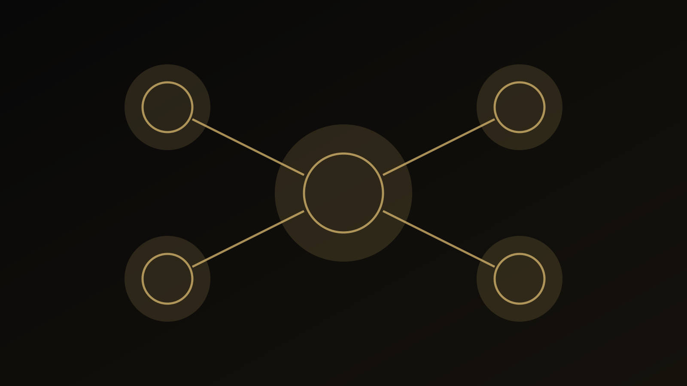

راهنمای دانشآموز و خانواده
انتخاب رشته دانشگاهی ۱۴۰۵؛ چگونه رشتهمحلها را علمی و منطقی اولویتبندی کنیم؟
در انتخاب رشته سالانه، دو نوع اطلاعات باید از هم جدا بمانند: اطلاعات رسمی و متغیر همان سال، و معیارهای نسبتاً پایدار تصمیم فردی. ظرفیت، کدرشته، سهمیه و ضابطه باید از منبع رسمی همان سال خوانده شود؛ اما ترجیح، شرایط و تناسب نیازمند تحلیل شخصی است.
انتخاب رشته ۱۴۰۵ را از خود مسئله شروع کنیم
در انتخاب رشته سالانه، دو نوع اطلاعات باید از هم جدا بمانند: اطلاعات رسمی و متغیر همان سال، و معیارهای نسبتاً پایدار تصمیم فردی. ظرفیت، کدرشته، سهمیه و ضابطه باید از منبع رسمی همان سال خوانده شود؛ اما ترجیح، شرایط و تناسب نیازمند تحلیل شخصی است.
در این راهنما هدف ارائه نسخه آماده نیست. مسئله به اجزای کوچکتر تقسیم میشود تا معلوم باشد چه اطلاعاتی داریم، چه چیزی هنوز نامطمئن است و کدام نتیجه واقعاً از شواهد پشتیبانی میشود. این شیوه هم برای تصمیم انسانی مفیدتر است و هم از تبدیل یک شاخص یا یک تجربه به حکم کلی جلوگیری میکند.
پنج لایهای که در انتخاب رشته ۱۴۰۵ باید جداگانه دیده شوند
۱. اطلاعات رسمی
دفترچهها و اصلاحیههای رسمی محدوده امکان را تعیین میکنند و باید مبنای دادههای سالانه باشند.
۲. ترتیب ترجیح
فهرست انتخابها باید ترتیب واقعی ترجیح داوطلب را نشان دهد، نه ترس از دست دادن یک گزینه.
۳. شناخت رشته
نام رشته جای شناخت سرفصل، سبک تحصیل، محیط و مسیرهای بعدی را نمیگیرد.
۴. شرایط زندگی
شهر، هزینه، خوابگاه و محدودیتهای خانوادگی بخشی از تصمیماند.
۵. بازبینی نهایی
قبل از ثبت، باید سازگاری ترتیب انتخابها با منطق تصمیم دوباره بررسی شود.
اهمیت این تفکیک در آن است که دو مورد میتوانند همزمان درست باشند اما پیام یکسانی نداشته باشند. به همین دلیل، بهتر است پیش از جمعبندی، برای هر لایه مشخص کنیم «شاهد چیست؟»، «حد تفسیر کجاست؟» و «چه اطلاعاتی ممکن است نتیجه را تغییر دهد؟»

خطاهای رایج؛ چه چیزهایی کیفیت تصمیم را پایین میآورند؟
۱. اتکا به دادههای سال گذشته بدون کنترل منبع رسمی
این خطا معمولاً بخشی از اطلاعات را بیش از اندازه پررنگ میکند و امکان دیدن تصویر کامل را کاهش میدهد. راه بهتر این است که ادعا یا تصمیم به شواهد مشخص و محدودیتهای همان شواهد متصل شود.
۲. چیدن انتخابها فقط بر اساس شانس قبولی
این خطا معمولاً بخشی از اطلاعات را بیش از اندازه پررنگ میکند و امکان دیدن تصویر کامل را کاهش میدهد. راه بهتر این است که ادعا یا تصمیم به شواهد مشخص و محدودیتهای همان شواهد متصل شود.
۳. قرار دادن گزینهای که واقعاً نمیخواهیم فقط برای پرکردن فهرست
این خطا معمولاً بخشی از اطلاعات را بیش از اندازه پررنگ میکند و امکان دیدن تصویر کامل را کاهش میدهد. راه بهتر این است که ادعا یا تصمیم به شواهد مشخص و محدودیتهای همان شواهد متصل شود.
خطاهای بالا معمولاً از میل طبیعی ما به سادهکردن یک مسئله پیچیده میآیند. سادهسازی لازم است، اما نباید اطلاعاتی را حذف کند که اگر دیده میشدند، تصمیم یا تفسیر تغییر میکرد.
یک مسیر عملی برای حرکت از سؤال به اقدام
این مسیر عمداً مرحلهای است. اگر در یکی از مراحل شواهد کافی وجود ندارد، بهتر است همانجا توقف کنیم و اطلاعات تازه جمع کنیم تا اینکه با قطعیت ظاهری به مرحله بعد برویم.
چه زمانی کمک حرفهای معنا دارد؟
اگر مسئله به اطلاعات فردی، پرونده خصوصی، تحلیل تخصصی یا قضاوتی وابسته است که با مطالعه عمومی حل نمیشود، استفاده از خدمت حرفهای میتواند منطقی باشد. در مقابل، اگر پرسش عمومی است، مطالعه راهنماها و منابع رسمی باید نقطه شروع باقی بماند.
جزئیات ۱۴۰۵ باید فقط با منبع رسمی همان سال تطبیق داده شوند؛ هیچ قبولیای قابل تضمین نیست.
پرسشهای متداول درباره انتخاب رشته ۱۴۰۵
انتخاب رشته ۱۴۰۵ دقیقاً چه مسئلهای را حل میکند؟
این موضوع زمانی مفید است که به یک پرسش یا تصمیم مشخص متصل شود. در انتخاب رشته سالانه، دو نوع اطلاعات باید از هم جدا بمانند: اطلاعات رسمی و متغیر همان سال، و معیارهای نسبتاً پایدار تصمیم فردی. ظرفیت، کدرشته، سهمیه و ضابطه باید از منبع رسمی همان سال خوانده شود؛ اما ترجیح، شرایط و تناسب نیازمند تحلیل شخصی است.
مهمترین خطا در انتخاب رشته ۱۴۰۵ چیست؟
یکی از خطاهای رایج، اتکا به دادههای سال گذشته بدون کنترل منبع رسمی است. کیفیت تصمیم زمانی بالاتر میرود که شواهد، محدودیتها و هدف استفاده از نتیجه روشن باشند.
چه زمانی کمک حرفهای برای انتخاب رشته ۱۴۰۵ معنا دارد؟
وقتی پاسخ به اطلاعات فردی، قضاوت تخصصی یا بررسی پرونده وابسته است و راهنمای عمومی برای تصمیم کافی نیست. جزئیات ۱۴۰۵ باید فقط با منبع رسمی همان سال تطبیق داده شوند؛ هیچ قبولیای قابل تضمین نیست.
جمعبندی
انتخاب رشته ۱۴۰۵ زمانی بیشترین ارزش را دارد که مسئله، شواهد، محدودیت و اقدام بعدی از هم جدا باشند. نتیجه خوب لزوماً نتیجه قطعی نیست؛ نتیجهای است که بتوان توضیح داد چرا با اطلاعات فعلی قابل دفاع است و چه چیزی ممکن است در آینده آن را تغییر دهد.